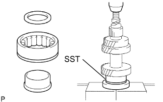
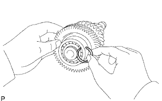
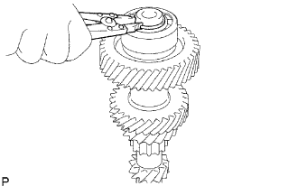

ЗАДАЮЩАЯ ШЕСТЕРНЯ > ПОВТОРНАЯ СБОРКА |
| 1. INSTALL COUNTER GEAR FRONT BEARING |
|  |
Using SST and a press, install a new front bearing to the counter gear.
|  |
Select a snap ring that will allow minimal axial play.
| Mark | Thickness |
| 1 | 2.05 to 2.10 mm (0.0807 to 0.0827 in.) |
| 2 | 2.10 to 2.15 mm (0.0827 to 0.0847 in.) |
| 3 | 2.15 to 2.20 mm (0.0847 to 0.0866 in.) |
| 4 | 2.20 to 2.25 mm (0.0866 to 0.0886 in.) |
| 5 | 2.25 to 2.30 mm (0.0886 to 0.0906 in.) |
| 6 | 2.30 to 2.35 mm (0.0906 to 0.0925 in.) |
|  |
Using a snap ring expander, install the snap ring.